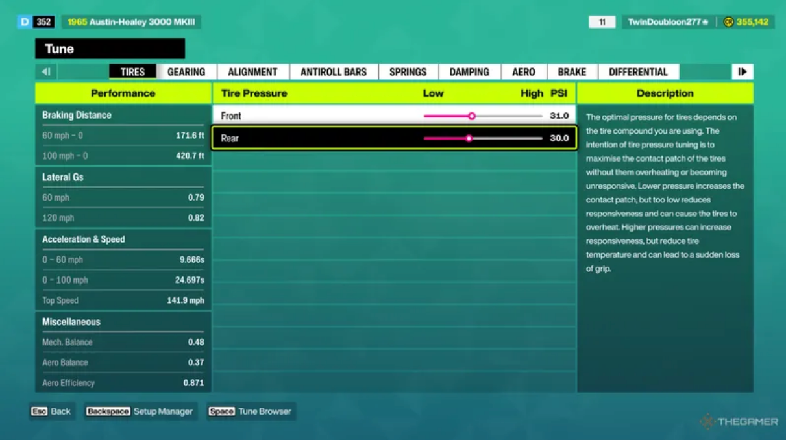

Quick Nav
FH6 Tuning System Introduction

Forza Horizon 6 full car tuning modification interface, covering all adjustable parameters
Car tuning is the core gameplay of Forza Horizon 6. A reasonable tuning setup can completely change vehicle handling, greatly improve lap times, stabilize drift angles, and adapt to rainy, snowy and rugged off-road tracks. All tuning schemes on this page are manually tested in-game and suitable for the latest FH6 version meta.
Basic Tuning Parameter Tutorial (Beginner Friendly)
Tire Pressure (First Setting to Adjust)
- Lower (1.8-2.0 bar): Better grip in rain/snow, good for drift initiation
- Standard (2.2-2.4 bar): Balanced grip for street racing
- Higher (2.5+ bar): Lighter feel, faster response, less rolling resistance
Gear Ratio
- Short gears: Fast acceleration - ideal for touge and drift
- Long gears: Higher top speed - for highway events
- Final Drive: Higher = faster accel, lower = higher top speed
Suspension Settings
- Spring Frequency: Higher = stiffer handling, Lower = smoother ride
- Rebound: Higher = bouncy, Lower = smoother over bumps
- Compression: Higher = firmer cornering, Lower = better absorption
- Ride Height: Lower = lower center of gravity = better cornering
Camber & Toe
- Negative Camber: -2.0° to -3.0° for cornering grip
- Toe: Mild rear toe-in (-0.3°) stabilizes straight line
Brake Balance
- Forward (55-60%): Easy initiating drifts
- Neutral (50%): Balanced street racing
- Rear (45%): Stable high-speed cornering
🔧 FH6 Tuning Calculator
Select your driving style and conditions to get a recommended tuning setup instantly.
Universal Beginner Drift Tuning Setup
This universal drift setup applies to most rear-wheel-drive and four-wheel-drive drift cars, suitable for mountain touge and drift event challenges:
Beginner Drift Tuning Values
- Tire Pressure: 2.2-2.4 bar (slightly lower for more grip)
- Gear Ratio: Acceleration priority, top speed moderate
- Suspension: Front soft / Rear stiff (anti-squat)
- Camber: Front -2.5° / Rear -1.8°
- Anti-roll bar: Front stiff -> Rear soft for initiation
- Differential: Rear lock 80-90% for continuous drift
Advanced Drift Tuning Secrets
- Clinometer: Add slight front lift to reduce wheel spin on launch
- Brake bias: 55-60% front for easy drift initiation
- Steering angle: Increase to max for tighter drifts
- Transmission: Set final drive 10% shorter for faster accel
Street Racing Meta Tuning Setup
Focus on stable cornering and fast exit speed, perfect for Tokyo urban circuit time trials:
- Standard tire pressure for balanced grip
- Balanced gear ratio for acceleration and top speed
- Overall stiff suspension to reduce body roll
- Small negative camber to ensure cornering stability
- Brake bias slightly forward to avoid understeer
Off-Road & Snow Track Tuning Setup
Special tuning for mountain snow, muddy and rugged cross-country tracks:
- Lower tire pressure to increase grounding area and grip
- Soft full suspension to buffer terrain bumps
- Stable differential setting to prevent wheel slip
- Moderate power adjustment to avoid excessive horsepower slip
Top 5 Tunable Meta Cars & Exclusive Setups
#1 Nissan 370Z (Best Beginner Drift Car)
- Class: Sports
- HP Range: 350-500hp
- Tune Focus: Easy drift initiation, balanced handling
- Key Setting: Differential 85%, Camber -2.8°/-2.0°
#2 Toyota AE86 Sprinter Trueno (Legend Touge King)
- Class: Classic Sports
- HP Range: 150-300hp (build up gradually)
- Tune Focus: Technical drifts, corner control
- Key Setting: Light flywheel, stiff rear anti-roll
#3 Mazda RX-8 (Continuous Drift Master)
- Class: Sports
- HP Range: 400-600hp
- Tune Focus: High-angle sustained drifts
- Key Setting: Custom intake, high-rev power band
#4 Honda Civic Type R (Street Race Champion)
- Class: Hot Hatch
- HP Range: 300-450hp
- Tune Focus: Urban circuit, tight corner dominance
- Key Setting: Stiff suspension, aggressive gearing
#5 Subaru WRX STI (All-Weather Legend)
- Class: Rally
- HP Range: 350-550hp
- Tune Focus: Rain/snow stability, AWD grip
- Key Setting: Symmetrical AWD, equal diffs

Related Guides
Track Matching Tuning Skills | Best Tuning Cars List | Beginner Operation Settings